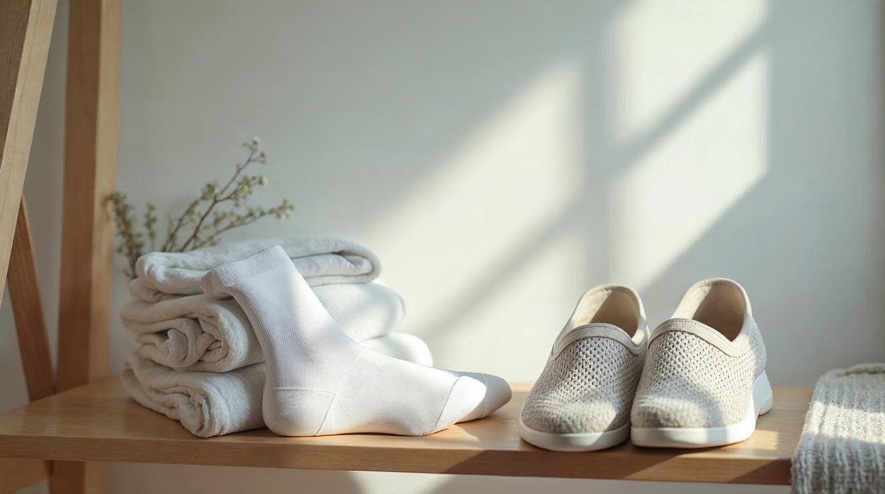
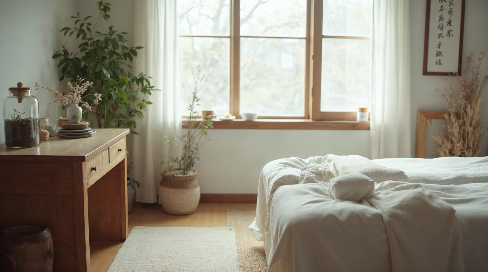
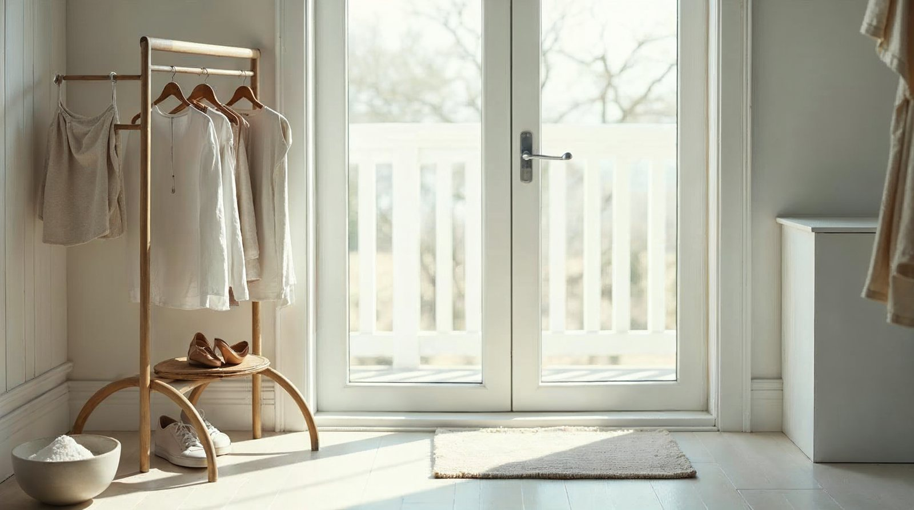

이종호 한의사 감수좋은꿈참사랑한의원 대표원장 (한의사 면허번호 19769)발행 2026-11-26 · 수정 2026-11-27
이 글의 차례
퇴근하고 집에 들어와 양말을 벗는 순간, 발가락 사이가 근질근질한 날이 있어요. 넷째와 새끼발가락 사이를 벌려 보면 살이 하얗게 불어 있고, 손톱으로 살짝 긁으니 껍질이 일어납니다. 시원한 것도 잠시, 금세 따끔거리고 다시 가렵죠. 혹시 무좀인가 싶어 괜히 신발장 쪽을 바라보게 됩니다.
무좀은 너무 흔해서 오히려 누구에게 묻기 민망한 고민이에요. 진료실에서도 다른 얘기를 한참 하시다가 마지막에 작은 목소리로 "그런데 발이 좀 가려운데요" 하고 꺼내시는 분이 많거든요. 저는 그 말이 반가워요. 발은 하루 종일 몸을 받치는 곳인데, 정작 제일 늦게 돌보게 되는 곳이니까요.
그러니까 사실은 두 가지를 나눠서 보셔야 해요. '가렵고 껍질이 일어난다'는 것과 '무좀이다'는 건 다른 얘기거든요. 땀이 많아 피부가 불어서 짓무른 경우도 있고, 손발에 작은 물집이 잡히는 한포진이나 접촉성 습진인 경우도 있어요. 겉모습이 비슷해서 집에서 무좀약부터 바르다가 오히려 피부가 더 예민해지는 분도 계십니다.
그래서 저는 무좀 얘기가 나오면 순서부터 말씀드려요. 무엇인지 확인하고, 발을 마르게 지키고, 그다음 몸 전체의 습기와 열, 땀을 함께 본다는 순서예요. 이 순서만 지켜도 같은 고민을 해마다 되풀이하는 일이 한결 줄어들 수 있어요.
무좀은 어떤 상태인가요
무좀은 피부의 가장 바깥 각질층에 곰팡이의 한 종류가 자리를 잡은 상태입니다. 이 곰팡이는 각질을 먹고 자라며, 따뜻하고 축축한 곳을 좋아합니다. 하루 종일 신발 속에 갇혀 땀에 젖어 있는 발가락 사이는 이들이 살기에 꼭 알맞은 곳입니다.
생기는 모양도 몇 가지로 나뉩니다. 발가락 사이가 하얗게 불고 갈라지는 모양이 가장 흔하고, 발바닥과 옆면에 고운 각질이 넓게 일어나는 모양, 발바닥 오목한 곳에 작은 물집이 모여 생기는 모양도 있습니다. 발톱까지 번지면 발톱이 두꺼워지고 누렇게 변하며 잘 부서집니다.
무좀은 옮을 수 있습니다. 목욕탕이나 수영장, 헬스장 탈의실 바닥, 함께 쓰는 발수건과 슬리퍼를 통해 곰팡이가 묻어 오기 쉽습니다.
가족 가운데 한 사람이 무좀이 있으면 다른 가족에게도 생기는 일이 흔해서, 집 안의 발매트와 수건을 함께 살피는 것이 좋습니다. 반려동물의 피부 곰팡이가 사람에게 옮는 경우도 있으니, 함께 사는 동물이 털이 빠지고 가려워한다면 동물병원에도 들러 보세요.
왜 무좀은 해마다 다시 올라올까요
무좀으로 고생하시는 분들이 가장 많이 하시는 말씀이 "약을 바르면 들어갔다가 여름만 되면 또 올라와요"입니다. 여기에는 몇 가지 이유가 겹쳐 있습니다. 이유를 알면 같은 일을 되풀이하지 않는 방법도 보이기 시작합니다.
- 가려움이 멎으면 약을 바로 끊어서, 각질 속에 남은 곰팡이가 다시 자라는 경우
- 같은 신발을 매일 신어 신발 속이 마를 틈이 없는 경우
- 발톱 무좀이 남아 있어 그곳에서 피부로 다시 번지는 경우
- 땀이 많거나 발을 씻은 뒤 발가락 사이를 덜 말리는 습관이 있는 경우
- 가족이 함께 쓰는 발매트, 수건, 슬리퍼가 그대로인 경우
특히 약을 일찍 끊는 일이 흔합니다. 겉으로 가려움과 껍질이 가라앉아도 각질 아래에는 곰팡이가 남아 있을 수 있습니다. 피부과에서 안내받은 기간 동안은 증상이 없어 보여도 이어서 바르시는 것이 다시 올라오는 일을 줄이는 길입니다.
몸의 상태도 영향을 줍니다. 잠이 모자라고 피로가 쌓인 시기, 혈당 관리가 흔들리는 시기, 땀이 유난히 많아지는 계절에는 피부의 방어가 느슨해져 무좀이 쉽게 번집니다. 그래서 저는 발만이 아니라 요즘 몸이 어떻게 지내는지를 함께 여쭙습니다.
무좀과 헷갈리기 쉬운 발의 불편
발에 생기는 가려움과 각질은 무좀 말고도 여러 가지가 있습니다. 모양이 닮아서 스스로 구분하기 어렵고, 잘못 짚으면 바르는 약이 맞지 않을 수 있습니다. 대표적인 것들을 나란히 놓고 보면 이렇습니다.
한포진은 손바닥과 발바닥, 손가락 옆에 좁쌀 같은 작은 물집이 깊게 박히듯 생기고 몹시 가렵습니다. 물집이 마르면서 껍질이 벗겨져 무좀처럼 보이지만, 곰팡이가 아니라 습진의 한 종류입니다. 스트레스와 땀, 계절 변화에 따라 오르내리는 경우가 많습니다.
접촉성 피부염은 새 신발의 고무나 가죽 염료, 양말 소재, 바른 약에 피부가 반응해 생깁니다. 신발이 닿는 발등이나 발가락 윗면을 따라 붉어지는 경우가 많고, 원인이 된 물건을 멀리하면 가라앉는 흐름을 보입니다.
땀으로 짓무른 피부는 발가락 사이가 하얗게 불지만, 곰팡이가 없을 수도 있습니다. 반대로 발뒤꿈치가 두껍게 갈라지는 건조한 각질은 겨울에 더 심해지고 가려움이 덜한 편입니다. 이렇게 겉모습만으로는 구분이 어려워서, 곰팡이 검사로 먼저 확인하는 것이 가장 정확합니다.

발톱 무좀은 왜 따로 챙겨야 하나요
발톱 무좀은 피부 무좀과 같은 곰팡이가 발톱 아래로 파고든 상태입니다. 처음에는 발톱 끝이 하얗거나 누렇게 변하는 정도라 대수롭지 않게 넘기기 쉽지만, 시간이 지나면 발톱이 두꺼워지고 들뜨며 가루처럼 부서집니다.
발톱은 자라는 속도가 느려서, 바르는 약만으로는 오래 걸리는 경우가 많습니다. 피부과에서는 발톱의 상태에 따라 먹는 약이나 다른 방법을 함께 권하기도 합니다. 먹는 약은 간 기능이나 다른 약과의 관계를 살펴야 해서, 드시는 약을 미리 알려 드리는 것이 좋습니다.
발톱 무좀을 그대로 두면 그곳이 곰팡이의 저장고가 되어 발가락 사이 무좀이 자꾸 다시 생기기 쉽습니다. 또 두꺼워진 발톱이 신발에 눌리면 걸을 때 통증이 생기고, 걸음걸이가 틀어져 무릎이나 허리까지 불편해지는 분도 계십니다.
집에서 해 보는 간단한 자기 점검
진료실에 오시기 전에 몇 가지를 스스로 살펴보시면 이야기가 훨씬 수월해집니다. 정답을 맞히려는 것이 아니라, 어떤 모양인지 기억해 두시려는 것입니다.
- 가려운 곳이 발가락 사이인가요, 발바닥 넓은 면인가요, 발등인가요?
- 작은 물집이 있나요, 고운 각질만 있나요, 진물이 나나요?
- 한쪽 발만 그런가요, 양쪽 발이 비슷한가요?
- 발톱이 두꺼워지거나 색이 변한 곳이 있나요?
- 손바닥에도 비슷한 물집이나 각질이 있나요?
- 땀이 많이 나는 편인가요, 긴장할 때 더 나나요?
한쪽 발과 발톱에 몰려 있다면 무좀 쪽에 무게가 실리고, 손과 발에 함께 작은 물집이 있다면 한포진 쪽도 생각해 봅니다. 사진을 날짜별로 찍어 두시면 변화의 흐름을 보는 데 큰 도움이 됩니다.
먼저 이렇게 여쭙니다
처음 오시면 저는 대략 이런 순서로 여쭙니다. 미리 생각해 오시면 진료 시간을 더 알차게 쓰실 수 있습니다.
- 언제부터 가려웠고, 어떤 계절에 더 심해지나요?
- 무좀약이나 연고를 발라 보셨나요? 얼마나 오래, 어떻게 바르셨나요?
- 하루에 신발을 신고 있는 시간은 얼마나 되나요? 안전화나 구두를 오래 신으시나요?
- 땀은 발에만 많은가요, 손이나 겨드랑이, 온몸에도 많은가요?
- 가족 가운데 무좀이 있는 분이 계신가요?
- 당뇨나 혈액순환, 피부 질환으로 드시는 약이 있나요?
바르던 연고가 있다면 그대로 가져와 주세요. 스테로이드 연고와 무좀 연고는 하는 일이 전혀 달라서, 무엇을 얼마나 발랐는지에 따라 지금 피부의 모습이 달라지기도 합니다.
일상에서 먼저 해 볼 수 있는 것
무좀은 습기와의 싸움이라고 해도 지나치지 않습니다. 약을 바르는 것과 함께 발을 마르게 지키는 습관을 들이면, 다시 올라오는 일을 줄이는 데 도움이 될 수 있습니다.
- 발을 씻은 뒤 발가락 사이까지 수건으로 꼼꼼히 닦고, 잠시 맨발로 말리기
- 신발은 두세 켤레를 번갈아 신어 하루씩 쉬게 하기
- 땀을 잘 흡수하는 면이나 기능성 양말을 신고, 땀이 차면 갈아 신기
- 발수건과 슬리퍼는 가족과 따로 쓰고, 발매트는 자주 빨아 말리기
- 목욕탕이나 수영장에서는 개인 슬리퍼 신기
- 가려워도 손톱으로 긁거나 껍질을 뜯지 않기
발을 씻을 때 너무 뜨거운 물로 오래 담그거나 각질을 세게 밀면 피부가 더 약해질 수 있습니다. 미지근한 물로 짧게 씻고 잘 말리는 쪽이 좋습니다. 식초나 소주에 발을 담그는 민간요법은 피부를 자극해 오히려 짓무름이 심해지는 경우가 있어 권하지 않습니다.
일하는 환경상 하루 종일 안전화나 장화를 신어야 하는 분이라면, 점심시간에 잠깐이라도 신발을 벗고 양말을 갈아 신어 보세요. 여분의 양말 한 켤레를 가방에 넣어 두는 것만으로도 발이 젖어 있는 시간이 크게 줄어듭니다.
신발 관리도 발 관리만큼 중요합니다. 벗은 신발은 신발장에 바로 넣지 말고 통풍이 되는 곳에 두어 속까지 말리고, 깔창을 뺄 수 있다면 따로 꺼내 말려 주세요. 신문지를 구겨 넣어 두면 밤사이 습기를 빨아들이는 데 도움이 됩니다.
발에 땀이 유난히 많은 분은 땀 자체를 살피는 것도 중요합니다. 긴장하면 발바닥이 축축해지는지, 더위를 많이 타는지, 밤에도 땀이 나는지에 따라 땀이 나는 이유가 다를 수 있어서, 진료실에서 이 부분을 함께 짚어 봅니다.

한의원에서 함께 살필 수 있는 경우
무좀 자체는 곰팡이를 다스리는 약이 중심이 되므로, 확인과 약 처방은 피부과 진료를 먼저 권합니다. 한의원에서는 그와 나란히, 무좀이 잘 생기고 되풀이되는 몸의 바탕을 함께 살핍니다.
- 발과 손에 땀이 많아 늘 축축하고, 긴장하면 더 심해지는 경우
- 무좀과 함께 한포진이나 습진이 번갈아 생겨 구분이 어려운 경우
- 피로와 잠 부족이 이어지는 시기마다 발의 가려움이 함께 심해지는 경우
- 손발은 찬데 발바닥은 화끈거리고 땀이 차는 경우
- 오래 서서 일해 저녁이면 발이 붓고 무거운 경우
좋은꿈참사랑한의원에 오시면 모든 분의 맥을 먼저 짚고, 아래 '먼저 확인이 필요한' 신호가 없는지도 함께 봅니다. 그다음 땀이 나는 양상과 손발 온도, 잠과 소화, 대소변을 여쭙니다. 발은 직접 보며 무좀과 습진, 짓무름 가운데 어느 쪽에 가까운지 함께 살핍니다.
진찰한 내용을 바탕으로 생활에서 바꿔 볼 것 하나와 함께 침, 한약 상담 가운데 지금 상태에 맞는 것을 정합니다. 한약을 상의할 때는 드시는 약을 모두 확인하고 신중하게 정합니다. 피부과에서 처방받은 약은 상의 없이 멈추지 않으시도록 안내합니다.
임신 중이시거나 임신을 준비 중이라면 먼저 알려 주세요. 바르는 약과 먹는 약 모두 산부인과, 피부과 선생님과 상의해서 정하는 것이 순서입니다.
이렇게 기록해 오시면 상담이 쉬워집니다
발의 불편은 날마다 조금씩 달라서, 진료실에서 한 번 보는 것보다 집에서 쌓은 기록이 더 많은 것을 알려 줍니다. 2주 정도만 간단히 적어 보세요.
- 가려움이 심했던 날과 그날 신었던 신발, 신고 있던 시간
- 땀이 많았던 날과 긴장하거나 더웠던 상황
- 바른 약의 이름과 바른 횟수, 빠뜨린 날
- 물집, 진물, 갈라짐이 생긴 날의 사진
- 잠든 시각과 피곤했던 날 표시
기록을 나란히 놓고 보면 신발과 땀, 피로 가운데 어떤 것이 가려움과 함께 움직이는지 보이기 시작합니다. 그 연결이 다음 걸음을 정하는 실마리가 됩니다.

오래 편안한 발을 위해
오래 편안한 발을 위해
무좀은 부끄러운 병이 아니에요. 하루 종일 애쓴 발이 보내는 신호에 가까워요. 원래 발은 신발 안에서 땀과 열을 고스란히 받는 자리라, 누구에게나 생길 수 있는 거거든요.
약을 끝까지 바르는 건 피부과 선생님 안내를 따르시면 되고, 땀과 피로처럼 몸 쪽 흐름을 살피는 건 제가 맡을게요. 대신 하나만 부탁드려요. 발을 씻은 뒤 발가락 사이를 수건으로 꼼꼼히 말려 주세요. 넷째와 새끼발가락 사이까지요.
딴 건 하시던 대로 편하게 하셔도 돼요. 완벽하게 하려고 애쓰기보다 오래 이어 갈 수 있는 습관 하나가 길게 보면 발에 더 이롭거든요. 바쁜 날에는 그 하나만 지켜도 충분합니다.
다음에 오시면 그 일주일 동안 가려움이 어떻게 달라졌는지부터 함께 얘기 나눠요. 궁금한 건 그때 편하게 물어보세요.
이런 증상은 먼저 확인이 필요합니다
- 발이 붉게 붓고 뜨거우며 붉은 기운이 다리 위로 번지고 열이 나는 경우
- 당뇨가 있거나 감각이 둔한 발에 진물이 나는 상처나 검게 변한 곳이 생긴 경우
이런 신호가 있으면 한의원보다 가까운 병원이나 응급실을 먼저 찾으세요.
함께 읽으면 좋은 글
- 손가락에 작은 물집이 잡히고 가려운 한포진은 어떻게 살피나요?
- 손바닥·발바닥·겨드랑이에 땀이 너무 많은 다한증은 어떻게 살피나요?
- 발뒤꿈치가 하얗게 두꺼워지고 쩍쩍 갈라지거나 손발에 각질이 쌓일 때는 어떻게 살피나요?
- 당뇨가 있는데 발끝이 저리고 화끈거리거나 감각이 둔해지는 말초신경병증은 어떻게 살피나요?
- 발바닥 굳은살과 티눈이 걸을 때마다 콕콕 찌르듯 아플 때는 어떻게 살피나요?

여쭙는 것
- 언제부터 가려웠고, 어떤 계절에 더 심해지나요?
- 무좀약이나 연고를 발라 보셨나요? 얼마나 오래, 어떻게 바르셨나요?
- 하루에 신발을 신고 있는 시간은 얼마나 되나요? 안전화나 구두를 오래 신으시나요?
생활에서 해 볼 것
- 발을 씻은 뒤 발가락 사이까지 수건으로 꼼꼼히 닦고, 잠시 맨발로 말리기
- 신발은 두세 켤레를 번갈아 신어 하루씩 쉬게 하기
- 땀을 잘 흡수하는 면이나 기능성 양말을 신고, 땀이 차면 갈아 신기
한의원에서 함께 살필 것
- 발과 손에 땀이 많아 늘 축축하고, 긴장하면 더 심해지는 경우
- 무좀과 함께 한포진이나 습진이 번갈아 생겨 구분이 어려운 경우
- 피로와 잠 부족이 이어지는 시기마다 발의 가려움이 함께 심해지는 경우
먼저 확인이 필요한 신호
- 발이 붉게 붓고 뜨거우며 붉은 기운이 다리 위로 번지고 열이 나는 경우
- 당뇨가 있거나 감각이 둔한 발에 진물이 나는 상처나 검게 변한 곳이 생긴 경우
한눈에 보는 표
| 구분 | 핵심 |
|---|---|
| 여쭙는 것 | 언제부터 가려웠고, 어떤 계절에 더 심해지나요? 무좀약이나 연고를 발라 보셨나요? 얼마나 오래, 어떻게 바르셨나요? |
| 생활에서 해 볼 것 | 발을 씻은 뒤 발가락 사이까지 수건으로 꼼꼼히 닦고, 잠시 맨발로 말리기 신발은 두세 켤레를 번갈아 신어 하루씩 쉬게 하기 |
| 한의원에서 함께 살필 것 | 발과 손에 땀이 많아 늘 축축하고, 긴장하면 더 심해지는 경우 무좀과 함께 한포진이나 습진이 번갈아 생겨 구분이 어려운 경우 |
| 먼저 확인이 필요한 신호 | 발이 붉게 붓고 뜨거우며 붉은 기운이 다리 위로 번지고 열이 나는 경우 당뇨가 있거나 감각이 둔한 발에 진물이 나는 상처나 검게 변한 곳이 생긴 경우 |
자주 묻는 질문
무좀은 한의원에서 치료하나요?
무좀이 의심되면 곰팡이 검사와 약 처방이 가능한 피부과 진료를 먼저 권합니다. 한의원에서는 땀과 습기, 피로처럼 무좀이 되풀이되기 쉬운 몸의 바탕을 함께 살핍니다.
가려움이 없어지면 무좀약을 그만 발라도 되나요?
겉으로 가라앉아도 각질 속에 곰팡이가 남아 있을 수 있습니다. 피부과에서 안내받은 기간 동안은 이어서 바르시는 것이 다시 올라오는 일을 줄이는 데 도움이 됩니다.
식초나 소주에 발을 담그면 도움이 되나요?
피부를 자극해 짓무름이나 따가움이 심해지는 경우가 있어 권하지 않습니다. 미지근한 물로 짧게 씻고 발가락 사이까지 잘 말리는 쪽이 좋습니다.
가족에게 옮을 수 있나요?
발수건, 슬리퍼, 발매트를 함께 쓰면 옮을 수 있습니다. 개인 물건을 따로 쓰고 발매트는 자주 빨아 말려 주세요.
손에도 물집이 생기는데 같은 무좀인가요?
손과 발에 함께 작은 물집이 생긴다면 한포진 같은 습진일 수도 있습니다. 모양이 비슷해서 피부과에서 확인해 보시고, 진료실에서도 직접 보며 함께 살펴봅니다.
좋은꿈참사랑한의원은 재진 때 지난번 이야기부터 이어서 여쭙니다. 진료시간과 예약은 오시는 길에서 확인하세요.
어디서 상담받을 수 있나요?
좋은꿈참사랑한의원은 서울 동작구 만양로2길 2 신성빌딩 3층·5층(서울 동작구 상도동, 7호선 상도역 3번 출구 근처)에 있습니다. 한의사 3명(이종호 대표원장, 조영기 수석진료원장, 정원영 진료원장)이 진료합니다. 진료시간은 평일 09:30~20:00(점심 13:00~14:00), 토·일·공휴일 09:30~15:00이며, 방문 전 전화로 확인을 권합니다. 예약은 네이버 예약, 카카오톡 상담, 전화 02-815-7510로 받습니다.
이 글은 일반적인 건강 정보이며 개인의 진단이나 치료를 대신하지 않습니다. 증상이 있거나 복용 중인 약이 있다면 진료를 통해 확인하세요. 치료 효과는 개인마다 다를 수 있습니다.
작성 기준: 일반적으로 알려져 있는 건강 정보를 참고해 정리했습니다(대표원장 감수). 증상 기록은 1~2주 동안 하루 1회, 비슷한 시간에 적어 오시면 지난 상태와 비교하기 쉽습니다.